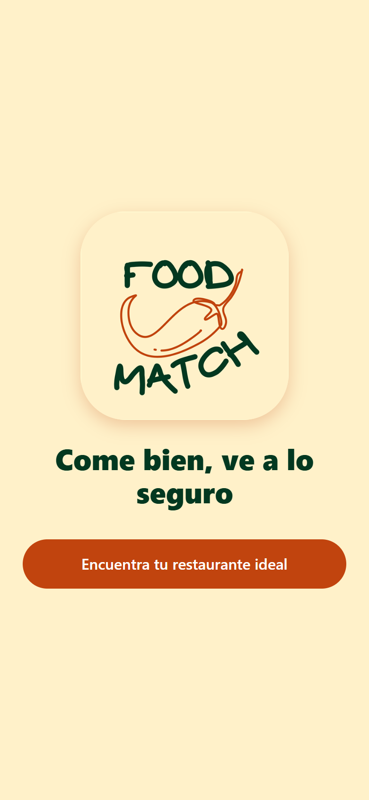
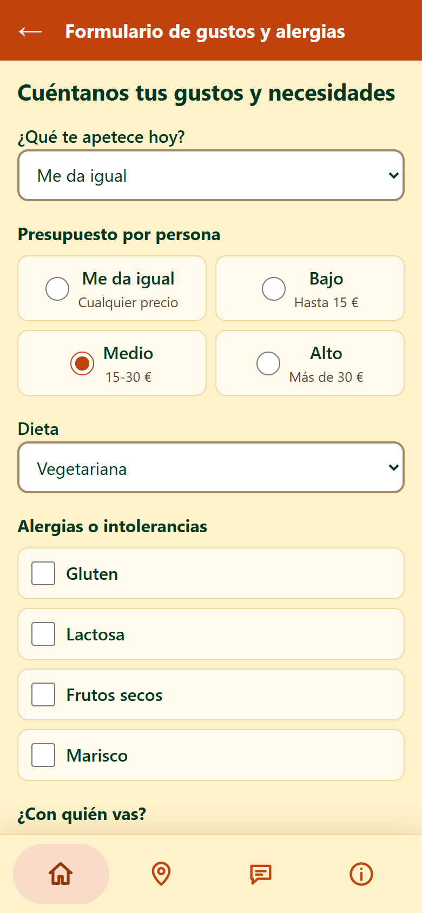
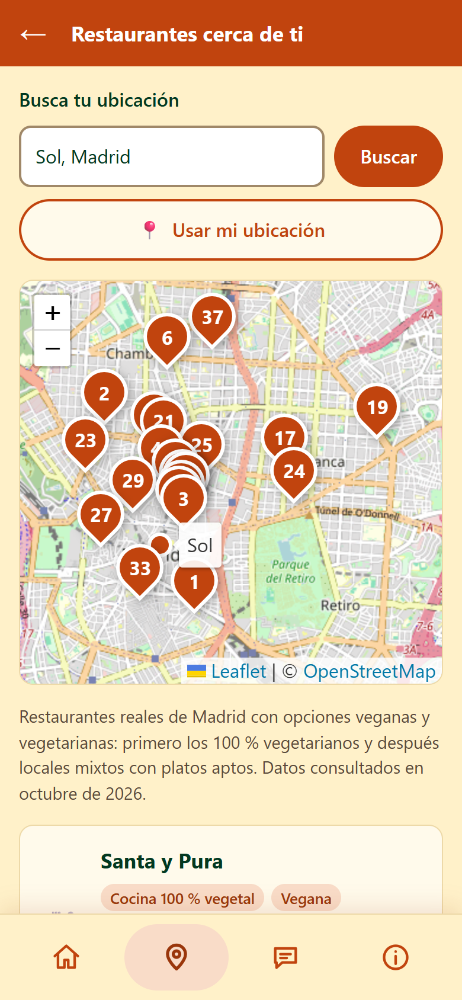
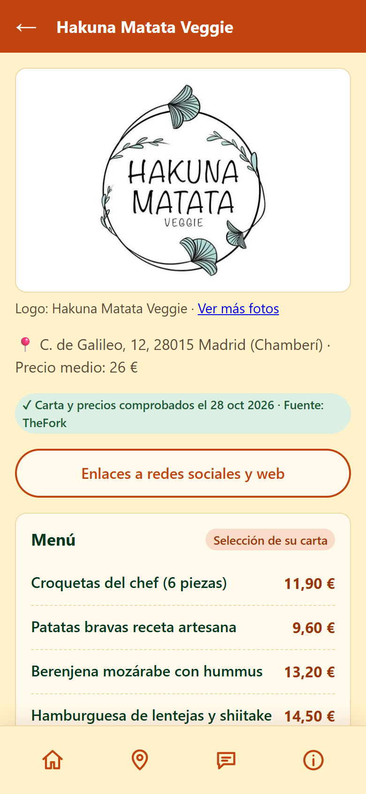

No sé dónde comer según mis gustos, presupuesto y alergias… y pierdo mucho tiempo
Os contamos algo que nos pasó: somos estudiantes, viajamos mucho y desconocemos todas las posibilidades para comer según nuestras necesidades.
(pausa) ¿A cuántos os ha pasado?
Información dispersa en muchas fuentes y un proceso largo
Fuente: 3 entrevistas a estudiantes y viajeros (D01–D03).
Lo que nos contaron: información dispersa en muchas fuentes y un proceso largo; menús y precios desactualizados o distintos a la realidad.
Hoy lo resuelven con aplicaciones como TheFork, Google Maps o Google, y no les basta.
No les faltan opciones: les falta confianza en la información
Lo que ven en mapas y redes
Menús, precios y fotos que no siempre están al día
Lo que encuentran en el local
Otra carta, otros precios… y a cruzar fuentes otra vez
Nuestro insight: su problema no es tanto la falta de opciones como la falta de confianza en la información disponible.
Lo que ven en mapas y redes no siempre coincide con lo que encuentran en el local (menús y precios desactualizados), y por eso acaban cruzando varias fuentes y verificando por su cuenta, y aun así a veces fallan.
FoodMatch · demo en vivo
Demo en vivo ↗



FoodMatch: Come bien, ve a lo seguro. Os lo enseñamos en directo.
(DEMO) Plan B si falla la conexión: recorred estas cuatro capturas.
Lo que nos dicen los datos
H1 · Ir al local sin volver a comprobar
Creíble sobre el papel, pero no es prueba de conducta.
H2 · Verificar y actualizar cada 30 días
La encuesta no lo mide.
Encuesta (n = 12, datos de práctica). H1: la promesa de confianza resulta creíble sobre el papel, pero eso no es una prueba de conducta.
H2: habla de si podemos hacer la verificación, no de si alguien la paga, así que esta encuesta no la mide. El dato de pago sí nos avisa de algo serio para el modelo de negocio: hoy casi nadie pagaría.
En el test con usuarios vimos 5 problemas de uso; los más graves los hemos corregido en esta versión.
H1 · Quien pide una recomendación verificada acaba yendo al local sin volver a comprobarlo → no concluyente. H2 · Podemos verificar menú, precio y opción dietética de un local en poco tiempo y mantenerlo al día cada 30 días → no concluyente.
Gratis para el usuario
0 €
Estudiantes y viajeros
Ya decidido
Pagan los restaurantes
Mejor posicionamiento si mantienen sus datos al día, y promociones para estudiantes patrocinadas por los locales.
Cómo ganamos dinero: gratis para el usuario (ya decidido); pago de los restaurantes por mejor posicionamiento si mantienen sus datos al día; promociones para estudiantes patrocinadas por los locales.
Iteramos
Creíble sobre el papel no es lo mismo que una prueba de conducta.
Seguimos
FoodMatch, gratis para el usuario.
Descartamos
Cobrar una suscripción al usuario.
Siguiente experimento
Explorar que paguen los locales y medir visitas reales desde la app.
Iteramos. Seguimos adelante con FoodMatch como app gratuita para el usuario. El problema existe y el concepto se entiende y genera confianza en una muestra pequeña.
Descartamos cobrar una suscripción al usuario como primera opción y exploraremos que paguen los locales.
Escanead el QR y probadlo
Come bien, ve a lo seguro
david-tell0.github.io/ed-equipo-2/app/
Probad FoodMatch ahora: escanead el QR.
Come bien, ve a lo seguro.